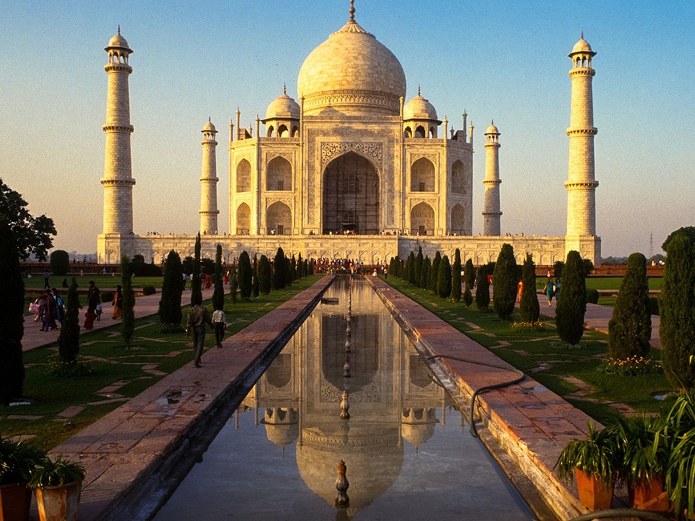

taj mahal
es un impresionante mausoleo de mármol blanco construido entre 1632 y 1653 en Agra, India, por el emperador mogol Shah Jahan en honor a su esposa favorita, Mumtaz Mahal. Es considerado una de las Siete Maravillas del Mundo Moderno y un símbolo eterno de amor